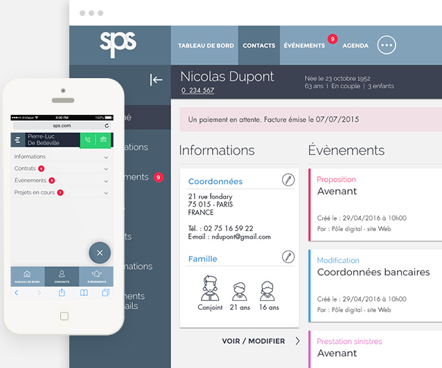
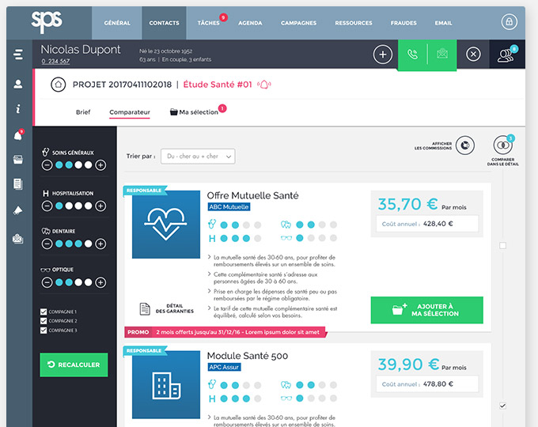
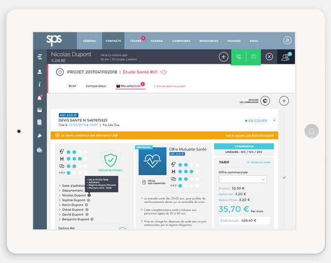
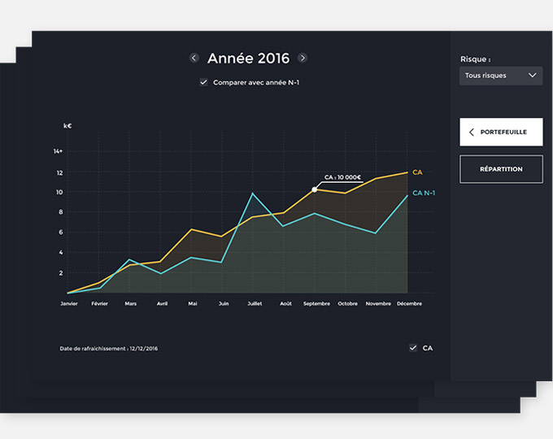
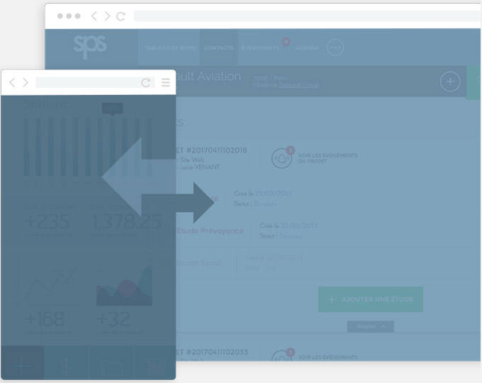

Assureur
Optimiser la distribution de vos produits d’assurance est un véritable challenge pour vous. La solution ? Notre plateforme multicanale, associée à un traitement uniformisé de tous vos contacts clients.
Courtier
Pour optimiser votre développement, vous avez accès à un vaste panel de garanties, que vous pouvez comparer en temps réel. Vous proposez les garanties les plus favorables à vos clients, au meilleur prix.
Fonctionnalités
Gestion de relations
clients multi-canal
Grâce à une gestion uniforme des données, SPS Solutions permet de mieux connaître les clients, et de répondre plus précisément à leurs besoins, quel que soit le canal d’adhésion ou de prospection utilisé : site web, comparateurs, téléphone, contact en agence, etc. L’outil favorise l’automatisation de la force de vente, l’organisation du support client et une gestion marketing personnalisée. Les données clients sont mises à jour en temps réel, où que l'on se trouve, et sont consultables depuis n'importe quel support.

Comparateur multirisques
et multi-compagnies
SPS Solutions permet l’accès à une vaste offre de garanties. Comparer les tarifs entre assureurs et leurs niveaux de prestations devient alors facile. La visualisation des produits les plus favorables est rapide, et chaque offre fait l’objet d’un devis personnalisable. Grâce au mécanisme de signature électronique intégré, le cycle de souscription est accéléré et les flux sont sécurisés.

Gestion des aspects
réglementaires
Face à une réglementation assurantielle complexe et évolutive, SPS Solutions intègre une base de réglementation actualisée en continu. Une surveillance permanente et quotidienne assure la performance de l’outil. Le traitement des réclamations, l’application du devoir de conseil, ou encore la mise en oeuvre du dispositif Tracfin, sont autant d’obligations spécifiques que la plateforme SPS Solutions administre automatiquement.

Accès à un réseau
de 400 courtiers
400 courtiers affiliés SPS assurent une couverture nationale, aussi bien auprès des professionnels et entreprises que des particuliers. Un interlocuteur dédié suit chaque courtier SPS de façon à lui apporter un accompagnement proactif et collaboratif. Le choix des courtiers et des produits distribués s’effectue de manière totalement sélective. La mise à disposition de tableaux de bord permet d’afficher les résultats et les performances du réseau en temps réel.

API simple
et puissante
SPS Solutions propose une interface permettant aux applications de s'intégrer à la fois au système d’information mais aussi à toutes les applications tierces souhaitées (site web, espace adhérent, comparateurs de prix...). L’intégration des données est facilitée en toute sécurité.
